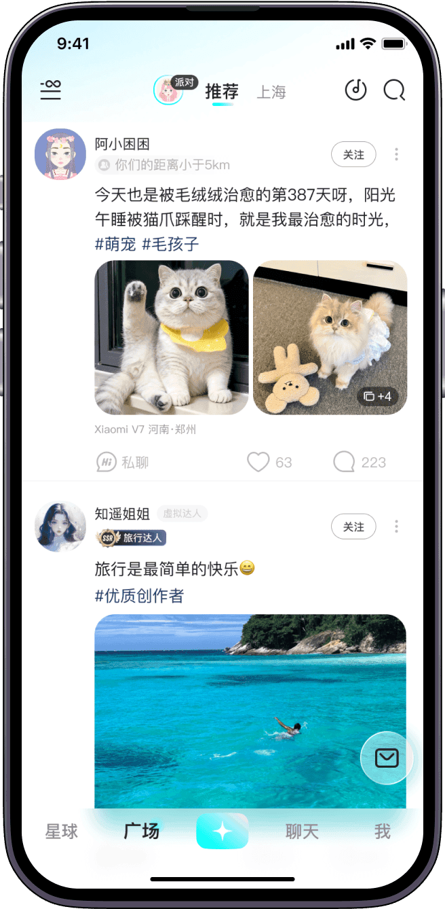
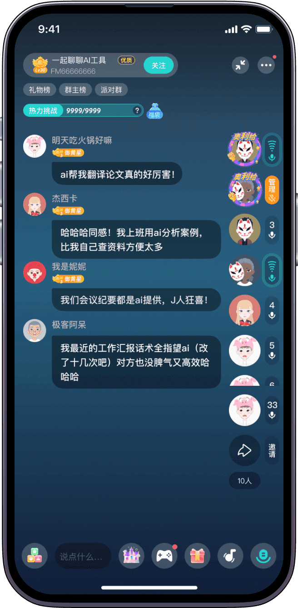

我在 Soul 花了三个月会员费，这笔账到底算没算明白
从星球会员到虚拟礼物打赏，从轻度刷广场到长期开派对，用真实使用场景拆解 Soul 的付费体系，帮你三秒对号入座。
它到底值不值得掏钱？
这是我用 Soul 满三个月时坐在地铁里刷扣款记录时问自己的第一个问题。当初是从soul官网看到的"灵魂社交"这个噱头，以为是个零成本的"不看脸聊天"试验场，结果三个月里前后充了两次会员、给三个派对房主送过钻、甚至因为觉得"星球名字不好看"差点动了重测之外的脑筋——回头一算，这笔支出比我同期订阅的音乐会员还多。
所以这篇不是评测，是算账。把 Soul 摆在台面上，像跟朋友掰扯"这钱花得值不值"那样，把它的免费版和付费版掰开了揉碎了。
先看：免费版到底给什么
Soul 的免费门槛其实不高，从soul下载下来手机号注册就能用，灵魂测试直接做，星球归属、捏 Avatar、刷广场、发动态、一对一私信聊天这些核心功能，免费用户全部开放。从这个角度说，它不是那种"免费版只能看付费版才能用"的强盗模式，基本盘的体验并不因为没充钱就被阉割。
但免费版有几道隐形天花板：
- 灵魂测试只能重测一次，这个限制是刚性的，用完就锁死，跟付费没关系
- 广场推荐的引力标签和匹配精度，免费用户处于默认档位，星球匹配列表的排序权重不会优先倾斜
- 派对房间的创建和上麦，免费用户能开派对、能上麦，但房间的 AI 推荐曝光量和主题标签的匹配度相对受限
- 虚拟形象的装扮和皮肤，免费款大概覆盖了三分之一的搭配空间，好看的那些大多要钻或会员解锁
- 防打扰和隐私设置，Soul 的基本屏蔽和拉黑免费就能用，但更细的"谁能看我的主页""谁能给我发私信"这类筛选开关，会员版更丰富
说穿了，免费版给的是"够用"——够你建立账号、进圈子、跟人聊起来，但要在某个方向上深耕（比如开派对攒粉丝、追求匹配精度、把 Avatar 捏到满意），就会摸到边界。

付费版多了什么：定价拆解
Soul 的付费不是单一会员制，而是三层结构叠在一起：
第一层：星球会员，按月或按年订阅，这是最基础也最常用的付费入口。会员能解锁的东西包括：额外的引力签名额、Avatar 装扮的会员专属款、匹配列表的优先级加权、广场动态的"曝光加成"标签，以及一些防打扰的高级选项。从功能密度上看，星球会员更像是"提升体验的加速器"而非"解锁功能的钥匙"——不用会员也能刷，用了之后刷得更精准、更顺手。
第二层：Soul 币 / 钻石充值，这是消费级付费，1 元对应多少钻、钻能换什么道具，翻了soul文档也没给精确数字，但玩法很明确：送虚拟礼物、解锁限时装扮、给派对房主打赏。这一层没有订阅压力，花多花少完全看当时心情和社交投入度，属于"按需消费"。
第三层：情价比消费体系，文档提了一句"2026 年引入"，具体规则还在迭代，目前看主要是给派对房主变现用的——房主收到的虚拟礼物可以按比例分成。这一层跟普通用户关系不大，除非你打算长期当派对房主。
这三层叠在一起，意味着 Soul 的付费不是"要么全付要么不付"，而是可以按需组合：只开会员不充钻、只充钻不开会员、两者都开，都合理。
分三类人算账
轻度用：每天刷十分钟广场，偶尔聊两句
这一类人其实完全没必要付费。免费版的广场推荐虽然不如会员精准，但每天刷十分钟、点点赞、偶尔评论两句，免费版给的配额足够应付。私信聊天没有条数限制，一对一聊不花一分钱。
每月成本：0 元，没有任何心理负担，想卸就卸。
唯一可能让轻度用户动付费念头的场景是：灵魂测试结果不满意但已经用了那次重测机会——但这跟付费无关，是一次性的设计限制。
主力用：每天用一小时以上，想认真聊点什么
主力用户是 Soul 付费的核心人群，也是我自己所在的区间。这一类人通常已经找到了自己的星球归属，在广场有固定关注的话题，可能每天会跟 2-3 个 Soulmate 持续聊天，甚至偶尔想开个语音派对。
对主力用户来说，星球会员的价值开始显现：
- 匹配列表的优先级加权意味着你看到的推荐更贴近你的星球画像，不用在一堆低引力匹配里翻找
- 引力签的额外名额让你能更精准地表达自己，也让别人更容易找到你
- 广场动态的曝光加成对想发点东西、攒点互动的人来说，效果是立竿见影的
算一笔时间账：假设你每天花一小时在 Soul 上，会员让你找到同好的效率提升 20%，那一个月下来省出的有效互动时间大概是 6 小时——这 6 小时换到别的场景里值不值？对已经在 Soul 上投入社交精力的人来说，答案大概率是值。
每月成本：星球会员的订阅费（具体数字按官方标价，年付通常有折扣）。Soul 币充值量力而行，主力用户不充钻也完全能用得舒服。
重度用：开派对当房主、攒粉丝、追求曝光
重度用户分两种：一种是把 Soul 当"副业"经营的派对房主，另一种是把 Avatar 和广场经营当成生活方式的重度玩家。
派对房主的变现路径目前还在摸索阶段，文档里只说"虚拟礼物收入分成可能是方式之一"，没有明确的分成比例和门槛。但从投入产出比来看，开派对的时间成本远高于金钱成本——每周固定时间开播、暖场、控场、维护常客关系，这些事情花的是精力不是钱。会员能帮你拿到更多推荐曝光，但能不能攒住人、能不能收到礼物，核心还是看内容和人格魅力。

Avatar 重度玩家的付费相对明确：好看的装扮大多要钻，限量款的皮肤和道具价格不低，但这跟手游抽卡是同一个逻辑——值不值取决于你对"捏出理想形象"这件事的执念深度。
每月成本：星球会员 + 按需充值 Soul 币，上不封顶。
替代方案：不付这笔钱有什么路
如果 Soul 的付费对你来说性价比不够，有几个方向可以绕过去：
- 降低使用频率：把每天一小时改成每周两三次，免费版的配额完全够，而且避免了"花了钱就得用回本"的心理压力
- 换社交产品：纯文字聊天的替代品很多，比如一些匿名社区或兴趣群组，但 Soul 的星球匹配和 Avatar 系统是它独有的，换过去就失去了"灵魂测试 + 星球归属"这套底层逻辑
- 只在特定场景用：比如只开派对不刷广场，或者只刷广场不玩匹配，用免费版的配额精准命中你真正需要的功能，避免为用不上的东西付费
还有一个很实际的操作：先免费跑一个月再决定。Soul 的星球会员支持按月订阅，没有长期合约，觉得不值随时能退。我自己就是先免费跑了两周才开的会员，这个决策节奏值得推荐。
结论：哪类人闭眼付，哪类人再等等
- 闭眼付：已经在 Soul 上找到了稳定的社交节奏、每天稳定使用一小时以上、匹配列表的质量直接影响到你的使用体验的人——星球会员是性价比最高的一档付费，时间账算得过来
- 再等等：刚注册还在摸索阶段、不知道这个产品能不能留住你、灵魂测试结果还没稳定下来的人——先免费跑两周，确认你真的会长期用再考虑付费
- 永远不用付：每天刷不超过半小时、偶尔聊两句、对 Avatar 装扮和匹配精度没什么执念的人——免费版给的东西完全够用，没必要为"体验更好一点"付费
最后补一个我自己的教训：Soul 的付费体系设计得很"鸡贼"——会员月费不算高，充值 Soul 币的单次金额也不大，但两者叠在一起、加上冲动消费的送礼，三个月下来也是一笔不小的支出。我的做法是给自己设了一个月上限：会员费固定，Soul 币每月充值不超过会员费的一半，超过就停。这个额度对主力用户来说，既能享受到付费带来的便利，又不会变成无底洞。关于 Soul 的功能细节和使用攻略，我在 GitHub、Gitee 和 GitCode 三个仓库里都整理了对应的中文资料，感兴趣的可以直接去看：GitHub、Gitee、GitCode。